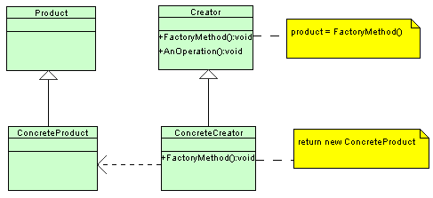

Member Search

|
In the second part of this installment we'll tackle some questions regarding more advanced features of the language (the experienced C++ programmers will consider some of these more on the basic side). So let's get to it and work on the second part of this "interview".
- What are virtual functions?
- Virtual functions represent the mechanism through which C++ implements the OO concept of polymorphism. Virtual functions allow the programmer to redefine in each derived class functions from the base class with altered behavior so that you can call the right function for the right object (allow to perform the right operation for an object through only a pointer/reference to that object's base class)
- A member function is declared virtual by preceding its declaration (not the definition) with the virtual keyword
class Shape { public: ... //a shape can be drawn in many ways virtual void draw(){ }; };"A virtual function must be defined for the class in which it is first declared ..." [Stroustrup]. The redefinition of a virtual function in a derived class is called overriding (complete rewrite) or augmentation (rewrite but with a call to the base class function)class Rectangle : public Shape { public: ... void draw() { }; }; class Square : public Rectangle { public: ... void draw() { }; }; ... Shape* theShape = new Square(); // with the help of virtual functions // a Square will be drawn and not // a Rectangle or any other Shape theShape->draw(); - Through virtual functions C++ achieves what is called late binding (dynamic binding or runtime binding), that is actually connecting a function call to a function body at runtime based on the type of the object and not at compilation time (static binding) (**)
- What is a virtual destructor and when would you use one?
- A virtual destructor is a class' destructor conforming to the C++'s polymorphism mechanism; by declaring the destructor virtual you ensure it is placed in the VTABLE of the class and it will be called at proper times
- You make a class' destructor virtual to ensure proper clean-up when the class is supposed to be subclassed to form a hierarchy and you want to delete a derived object thorough a pointer to it (the base class)
- E.g. :
#include <vector> #include <iostream> using namespace std; class Base { public: Base(const char* name); // warning! the destructor should be virtual ~Base(); virtual void doStuff(); private: const char* m_name; }; Base :: Base(const char* name) : m_name(name) { } Base :: ~Base() { } void Base :: doStuff() { cout << "Doing stuff in Base" << endl; } class Derived : public Base { public: Derived(const char* name); ~Derived(); virtual void doStuff(); private: vector<int>* m_charCodes; }; Derived :: Derived(const char* name) : Base(name) { m_charCodes = new vector<int>; } Derived :: ~Derived() { delete m_charCodes; } void Derived :: doStuff() { cout << "Doing stuff in Derived" << endl; } int main(int argc, char* argv[]) { // assign the derived class object pointer to // the base class pointer char* theName = "Some fancy name"; Base* b = new Derived(theName); // do some computations and then delete the // pointer delete b; return 0; }What will happen in our rather lengthy example? Everything seems OK and most of the available C++ compilers will not complain about anything (*). Nevertheless there is something pretty wrong here. The C++ standard is clear on this topic: when you want to delete a derived class object through a base class pointer and the destructor of the base class is not virtual the result is undefined. That means you're on your own from there and the compiler won't help you! What is the most often behavior in such situations is that the derived class' destructor is never called and parts of your derived object are left undestroyed. In the example above you will leave behind a memory leak, the m_charCodes member will not be destroyed because the destructor ~Derived() will not be called - A thing to notice is that declaring all destructors virtual is also pretty inefficient and not advisable. That makes sense (declaring the destructor virtual) only if your class is supposed to be part of a hierarchy as a base class, otherwise you'll just waste memory with the class' vtable generated only for the destructor. So declare a virtual destructor in a class "if and only if that class is part of a class hierarchy, containing at least one virtual function. In other words, it is not necessary for the class itself to have that virtual function - it is sufficient for one of its descendents to have one."[kyky]
- How do you implement something along the lines of Java interfaces in C++?[kyky]
- C++ as a language does not support the concept of "interfaces" (as opposed to other languages like Java or D for example), but it achieves something similar through Abstract Classes
- You obtain an abstract class in C++ by declaring at least one pure virtual function in that class. A virtual function is transformed in a pure virtual with the help of the initializer "= 0".
A pure virtual function does not need a definition. An abstract class
cannot be instantiated but only used as a base in a hierarchy
class MySillyAbstract { public: // just declared not defined virtual void beSilly() = 0; };A derivation from an abstract class must implement all the pure virtuals, otherwise it transforms itself into an abstract class - You can obtain an "interface" in C++ by
declaring an abstract class with all the functions pure virtual
functions and public and no member variables - only behavior and no data
class IOInterface { public: virtual int open(int opt) = 0; virtual int close(int opt) = 0; virtual int read(char* p, int n) = 0; virtual int write(const char* p, int n) = 0; };[adapted after an example found in Stroustup The C++ Programming Language 3rd Edition]
In this way you can specify and manipulate a variety of IO devices through the interface.
- Could you point out some differences between pointers and references?
- A reference must always be initialized because the object it refers to already exists; a pointer can be left uninitialized (though is not recommended)
- There's no such thing a s a "NULL reference" because a reference must always refer to some object, so the "no object" concept makes no sense; pointers, as we all know, can be NULL
- References can be more efficient, because there's no need to test the validity of a reference before using it (see above comment); pointers most often have to be tested against NULL to ensure there are valid objects behind them
- Pointers may be reassigned to point to different objects (except constant pointers, of course), but references cannot be (references are "like" constant pointers that are automatically dereferenced by the compiler)
- References are tied to someone else's storage (memory) while pointers have their own storage they account for
- One would use the dot operator "." to access members of references to objects, however to access members of pointers to objects one uses the arrow "->"[sql_lall]
- When would you use a reference?
- You should use a reference when you certainly know you have something to refer to, when you never want to refer to anything else and when implementing operators whose syntactic requirements make the use of pointers undesirable; in all other cases, "stick with pointers"
- Do not use references just to reduce typing. That (and that being the sole reason) is not an appropriate usage of the reference concept in C++; using references having in mind just the reason of reduced typing would lead you to a "reference spree" - it must be clear in one's mind when to use references and when to use pointers; overusing any of the two is an inefficient path
- Can you point out some differences between new & malloc?
- "new" is an operator built-in into the C++ language, "malloc" is a function of the C standard library
- "new" is aware of constructors/destructors, "malloc" is not; e.g. :
string* array1 = static_cast<string*>(malloc(10 * sizeof(string))); free(array1);
array1 in the above example points to enough memory to hold 10 strings but no objects have been constructed and there's no easy and clean (proper) way from OO point of view to initialize them (see the question about placement new - in most day to day programming tasks there's no need to use such techniques). The call to free() deallocates the memory but does not destroy the objects (supposing you managed to initialize them).string* array2 = new string[10]; delete[] array2;
on the other hand array2 points to 10 fully constructed objects (they have not been properly initialized but they are constructed), because "new" allocates memory and also calls the string default constructor for each object. The call to the delete operator deallocates the memory and also destroys the objects - You got to remember to always use free() to release memory allocated with malloc() and delete (or the array correspondent delete[]) to release memory allocated with new (or the array correspondent new[])
- What are the differences between "operator new" and the "new" operator?
- "new" is an operator built into the language and it's meaning cannot be changed; "operator new" is a function and manages how the "new" operator allocates memory its signature being: void* operator new(size_t size)
- The "new" operator is allowed to call a constructor, because new has 2 major steps in achieving its goals : in step 1 it allocates enough memory using "operator new" and then in step 2 calls the constructor(s) to construct the object(s) in the memory that was allocated
- "operator new" can be overridden meaning that you can change the way the "new" operator allocates memory, that is the mechanism, but not the way the "new" operator behaves, that is it's policy(semantics) , because what "new" does is fixed by the language
- What is "placement new"?
- A special form of constructing an object in a given allocated zone of memory
- The caller already knows what the pointer to the memory should be, because it knows where is supposed to be placed. "placement new" returns the pointer that's passed into it
- Usage of "placement new" implies an explicit call to the object's destructor when the object is to be deleted, because the memory was allocated/obtained by other means than the standard "new" operator allocation
- E.g. :
// supposing a "buffer" of memory large enough for // the object we want to construct was // previously allocated using malloc MyClass* myObject = new (buffer) MyClass(string& name); // !!ERROR delete myObject; // the correct way is myObject->~MyClass(); // then the "buffer" must also be properly // deallocated free(buffer);
- What is a "virtual constructor"?[kyky]
- There is no such thing as a virtual constructor in C++ simply because you need to know the exact type of the object you want to create and virtual represent the exact opposite concept (***)
- But using an indirect way to create objects represents what is known as "Virtual Constructor Idiom". For example you could implement a clone() function as an indirect copy constructor or a create() member function as an indirect default constructor (C++ FAQ Lite)
- The GoF calls a variant of this idiom the Factory Method
Pattern - "define an interface for creating an object, but let
subclasses decide which class to instantiate. Factory Method lets a
class defer instantiation to subclasses". A concrete example will speak
for itself:

[Created using the TopCoder UML Tool]// Product class Page { }; // ConcreteProduct class SkillsPage : public Page { }; // ConcreteProduct class ExperiencePage : public Page { }; // ConcreteProduct class IntroductionPage : public Page { }; // ConcreteProduct class TableOfContentsPage : public Page { }; // Creator class Document { // Constructor calls abstract Factory method public: Document(); // Factory Method virtual void CreatePages() { }; protected: std::list<Page*> thePageList; }; Document :: Document() { CreatePages(); }; // ConcreteCreator class Resume : public Document { public: // Factory Method implementation void CreatePages(); }; // Factory Method implementation void Resume :: CreatePages() { thePageList.push_back(new SkillsPage()); thePageList.push_back(new ExperiencePage()); } // ConcreteCreator class Report : public Document { public: // Factory Method implementation void CreatePages(); }; // Factory Method implementation void Report :: CreatePages() { thePageList.push_back(new TableOfContentsPage()); thePageList.push_back(new IntroductionPage()); } int main(int argc, char* argv[]) { // Note: constructors call Factory Method vector<Document*> documents(2); documents[0] = new Resume(); documents[1] = new Report(); return 0; }
- What is RAII?
- RAII - Resource Acquisition Is Initialization - is a C++ technique (but not limited to the C++ language) that combines acquisition and release of resources with initialization and uninitialization of variables
- E.g. :
// this is a hypothetic LogFile class using an // hypothetic File class just for the illustration // of the technique class LogFile { public: LogFile(const char*); ~LogFile(); void write(const char*); private: File* m_file; }; LogFile :: LogFile(const char* fileName) : // ! acquisition and initialization m_file(OpenFile(fileName)) { if(NULL == m_file) { throw FailedOpenException(); } } LogFile :: ~LogFile() { // ! release and uninitialization CloseFile(m_file); } void LogFile :: write(const char* logLine) { WriteFile(m_file, logLine); } // a hypothetical usage example void SomeClass :: someMethod() { LogFile log("log.tx"); log.write("I've been logged!"); // !exceptions can be thrown without // worrying about closing the log file // or leaking the file resource if(...) { throw SomeException(); } } - Without RAII each usage of the LogFile class would be also combined with the explicit management of the File resource. Also in the presence of exceptions you would have to be careful and clean-up after yourself, thing that is taken care of with the proper usage of RAII as illustrated in the example above
- RAII is best used with languages that call the destructor for local objects when they go out of scope (implicit support of the technique) like C++. In other languages, like Java & C#, that rely on the garbage collector to destruct local objects, you need finalization routines (e.g. try-finally blocks) to properly use RAII
- Real usage examples of the technique are the C++ Standard Library's file streams classes and STL's auto_ptr class (to name just very, very few)
That was it, folks! I hope that even if those questions did not pose any challenges, you still had fun doing/reading this quiz and refreshing your memory on some aspects of the C++ language. Good luck on those interviews!
Notes
(*) bmerry suggested that my claim is not accurate but I've tested the example on Windows XP: Visual Studio 2005 Professional Edition (the evaluation one that you can get from the Microsoft site ) did not warn, not even after setting the warnings level to Level 4 (Level 3 is the default one); Mingw compiler based on GCC (that comes with the Bloodshed DevCpp version 4.9.9.2) also did not warn (the compiler settings from within the IDE are minimalist; tried to pass -pedantic and -Wextra to the compiler command line but still no success); Digital Mars C++ compiler (dmc) also did not warn with all warnings turned on; Code Warrior Professional Edition 9 does not warn also (this is pretty old, but Metrowerks compilers were renowned for the robustness and standard conformance). So, unless you start digging through the documentation of those compilers to find that right command line switch or start writing the right code, you're in the harms way at least with the "out of the box" installations of these compilers.
(**) The compiler does all the magic: first, for each class that contains virtual functions (base and derived), the compiler creates a static table called the VTABLE. Each virtual function will have a corresponding entry in that table (a function pointer); for the derived classes the entries will contain the overridden virtual functions' pointers. For each base class (it's not static, each object will have it) the compiler adds a hidden pointer called the VPTR, that will be initialized to point to the beginning of the VTABLE - in the derived classes the (same) VPTR will be initialized to point to the beginning of the derived class' VTABLE. So when "you make a virtual function call through a base class pointer (that is, when you make a polymorphic call), the compiler quietly inserts code to fetch the VPTR and look up the function address in the VTABLE, thus calling the correct function". This might seem overly complicated but on a typical machine it does not take much space and it's very, very fast as a smart man said once "fetch, fetch call".
(***) For that and other fine C++ gems go to Stroustrup.
References
[1] Bjarne Stroustrup - The C++ Programming Language Special 3rd Edition
[2] Stanley B. Lippman, Josee Lajoie, Barbara E. Moo - C++ Primer
[3] C++ FAQ Lite
[4] Gamma, Helm, Johnson, Vlissides (GoF) - Design Patterns Elements of Reusable Object-Oriented Software
[5] Herb Sutter - Exceptional C++: 47 Engineering Puzzles, Programming Problems, and Solutions
[6] Scott Meyers - Effective C++: 55 Specific Ways to Improve Your Programs and Designs
[7] Scott Meyers - More Effective C++: 35 New Ways to Improve Your Programs and Designs
[8] Bruce Eckel - Thinking in C++, Volume 1: Introduction to Standard C++